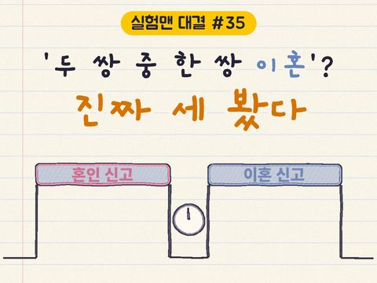
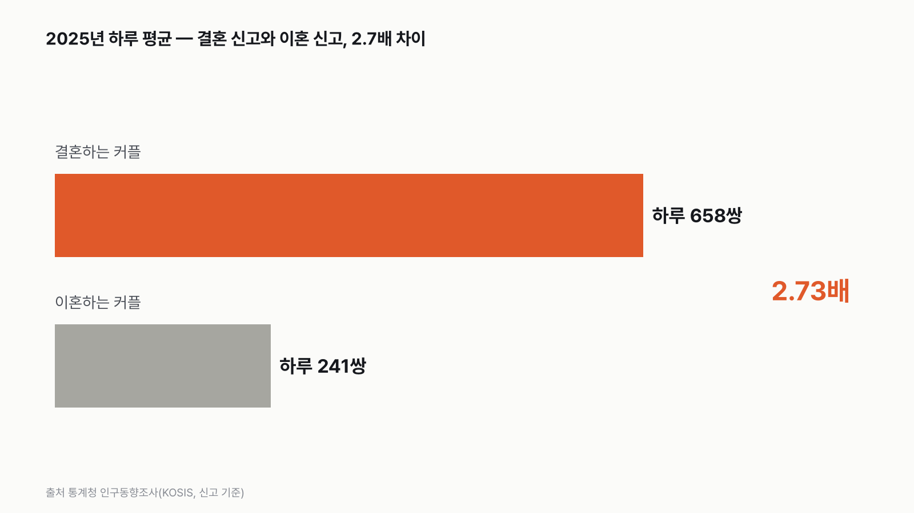
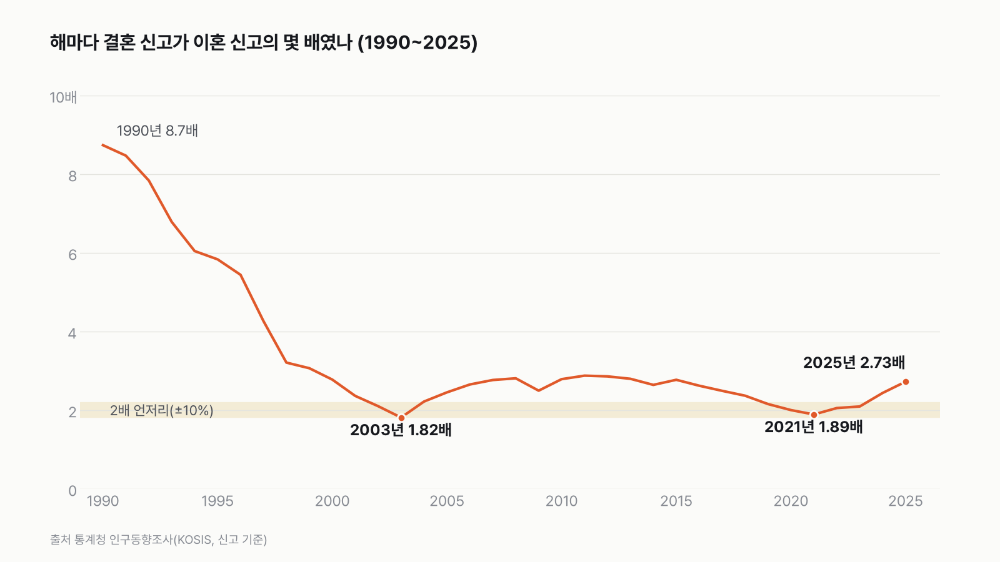
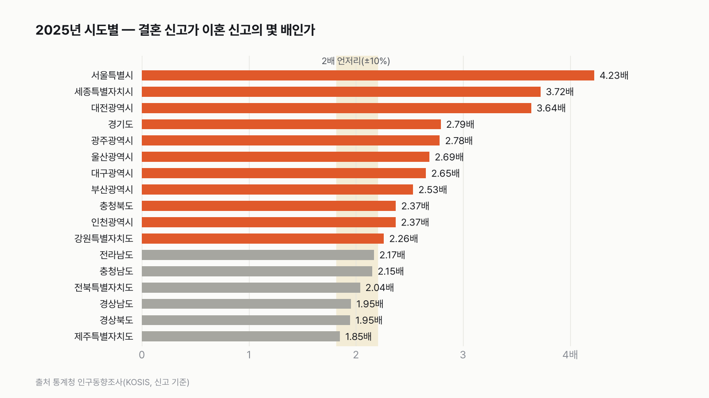
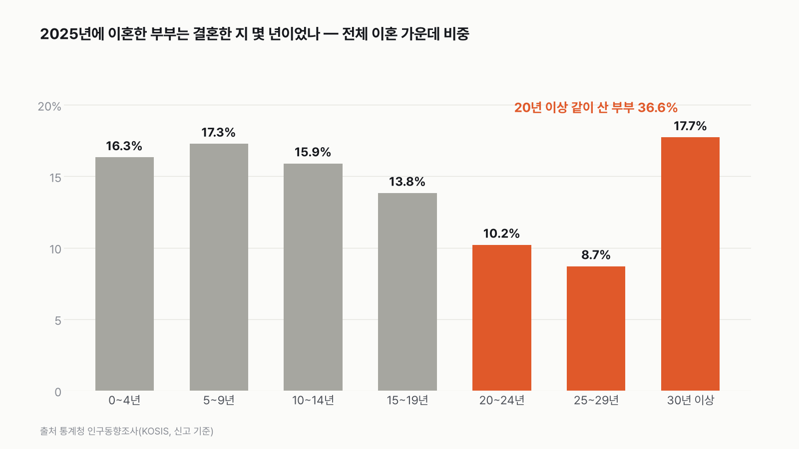

우리나라에서 하루에 결혼하는 커플과 이혼하는 커플, 몇 배 차이일까
"두 쌍 가운데 한 쌍"이라는 말이 숫자로도 맞는지, 하루 신고 창구에서 확인해 봐요. 먼저 골라 주세요.

독자 투표
우리나라에서 하루에 결혼하는 커플은 이혼하는 커플의 몇 배일까?
3줄 요약
- 오늘 하루 우리나라 구청과 주민센터에 결혼 신고를 하러 오는 커플과 이혼 신고를 하러 오는 커플, 몇 배 차이 날까요?
- "결혼하는 두 쌍 가운데 한 쌍은 이혼한다"는 말도 있어요. 정말 2배 언저리일까요?
- 통계청 인구동향조사의 신고 건수로 세 판을 겨뤘어요. 투표하면 결과가 바로 아래에 열려요.
조건과 규칙
- 숫자는 모두 통계청 인구동향조사의 혼인 신고·이혼 신고 건수예요. 가정이나 추정은 넣지 않았어요.
- 결혼 쪽과 이혼 쪽을 같은 기간, 같은 지역, 같은 신고 기준으로 세요.
- 세 판으로 재요. 가장 최근 해의 하루 평균, 최근 10년 합계, 그리고 17개 시도별 값이에요.
- 사례나 개인 사정은 다루지 않아요. 숫자만 봐요.
결과 요약
3판 모두 2배 넘게 → 최종 2배 넘게(2025년 하루 2.73배)
- 2025년에는 하루 평균 658쌍이 결혼 신고를, 241쌍이 이혼 신고를 했어요. 2.73배예요.
- 최근 10년을 합치면 2.28배, 17개 시도의 가운데 값은 2.37배예요. 어느 쪽으로 재도 2배를 넘어요.
- 다만 2배와 거의 같았던 때와 곳도 있어요. 2002~2003년과 2019~2023년, 그리고 시도 가운데 전남·충남·전북·경남·경북·제주는 2배에서 10% 안쪽이에요. 2배 밑으로 크게 내려간 해나 시도는 없어요.
그래서? 결혼 신고는 2분 남짓마다, 이혼 신고는 6분마다 한 쌍이에요. 이 배수는 '이혼율'이 아니에요. 2025년에 이혼한 부부 가운데 36.6%는 20년 이상 함께 살았어요.
독자 예상 vs 데이터 결과
우리나라에서 하루에 결혼하는 커플은 이혼하는 커플의 몇 배일까?
데이터로 보면 2배 넘게. 2025년 하루 평균 결혼 658쌍, 이혼 241쌍으로 2.73배예요. 2019~2023년에는 2배와 거의 같았어요.
| 판 | 결혼 | 이혼 | 배수 | 판정 |
|---|---|---|---|---|
| 1판 2025년 하루 평균 | 658쌍 | 241쌍 | 2.73배 | 2배 넘게 |
| 2판 최근 10년(2016~2025) 합계 | 229.7만 쌍 | 100.6만 쌍 | 2.28배 | 2배 넘게 |
| 3판 2025년 17개 시도 가운데 값 | — | — | 2.37배 | 2배 넘게 |
| 최종 | 3판 모두 2배 넘게 |
3판은 시도마다 배수를 낸 뒤 17곳의 가운데 값을 골라서, 결혼·이혼 칸이 비어 있어요. 모든 숫자가 실제 신고 건수라서 가정에 걸린 판은 없어요. 배수가 2배에서 10% 안쪽(1.8~2.2배)이면 '2배와 거의 같다'로 봤어요. 세 판 모두 그보다 커서, 최종 판정은 '2배 넘게'예요.
1판 2025년 하루 평균: 2배 넘게(2.73배)


2025년 한 해 동안 혼인 신고는 240,326건, 이혼 신고는 88,130건이었어요. 365일로 나누면 하루에 결혼 658쌍, 이혼 241쌍이에요. 하루 24시간으로 다시 나누면 결혼 신고는 2분 남짓에 한 쌍, 이혼 신고는 6분에 한 쌍 정도예요. 이 전국 숫자에는 해외에서 한 신고도 들어 있어요. 해외 신고를 빼도 2.73배로 같아요.
달마다 보면 12월이 가장 컸어요. 12월에는 하루 평균 823쌍이 결혼 신고를 해서 3.26배였어요. 가장 작은 달은 9월로 2.32배였어요. 열두 달 모두 2배를 넉넉히 넘었어요.
2판 최근 10년 합계: 2배 넘게(2.28배)


2016년부터 2025년까지 결혼 신고는 229.7만 건, 이혼 신고는 100.6만 건이었어요. 합치면 2.28배예요. 그런데 해마다 보면 사정이 달라요. 2016년 2.62배에서 해마다 줄어 2019년 2.16배, 2020년 2.00배, 2021년 1.89배, 2022년 2.06배, 2023년 2.10배까지, 다섯 해 내리 2배와 거의 같았어요. 그 뒤 다시 올라 2024년 2.44배, 2025년 2.73배가 됐어요.
솔직히 저도 계산 전에는 요즘이 가장 2배에 가까울 줄 알았어요. 그런데 가장 낮았던 건 2003년(1.82배)이었고, 지난 2년은 결혼 신고가 늘고 이혼 신고가 줄면서 10년 전 수준으로 돌아갔어요.
더 길게 보면 차이가 훨씬 컸던 시절이 있어요. 1970년에는 결혼 신고가 이혼 신고의 25.4배, 1990년에도 8.7배였어요. 1990년대 후반부터 빠르게 줄어 2002~2003년에 처음으로 2배와 거의 같아졌어요. 1970년 이후 2배 언저리였던 해는 2002~2003년과 2019~2023년, 모두 일곱 해예요. 2배 밑으로 크게 내려간 해는 한 번도 없었어요.
3판 17개 시도 가운데 값: 2배 넘게(2.37배)


2025년 시도별로 나눠 보면 17곳 가운데 11곳이 2배를 넉넉히 넘었어요. 서울이 4.23배로 가장 컸고, 세종(3.72배)과 대전(3.64배)이 뒤를 이었어요. 나머지 여섯 곳, 전남(2.17배), 충남(2.15배), 전북(2.04배), 경남(1.95배), 경북(1.95배), 제주(1.85배)는 2배와 거의 같아요. 17곳을 줄 세운 가운데 값은 2.37배로, 가운데는 충북이고 바로 다음이 인천이에요.
시도별 배수는 그 지역 부부가 얼마나 오래 함께 사는지를 말해 주지 않아요. 결혼 신고는 새로 시작하는 커플의 기록이고, 이혼 신고는 여러 해 전에 결혼한 부부의 기록이라서, 그 지역에 어떤 나이대가 많이 사는지 같은 다른 차이가 함께 섞여 있어요.
이 배수는 '이혼율'이 아니에요


"결혼하는 두 쌍 가운데 한 쌍이 이혼한다"는 말은, 같은 해 결혼 신고와 이혼 신고를 나누면 2배 언저리가 나와서 그렇게 들릴 수 있어요. 하지만 그해 이혼하는 부부는 그해 결혼한 부부가 아니에요. 2025년에 이혼한 부부 가운데 결혼한 지 4년 이하(0~4년)인 부부는 16.3%뿐이고, 20년 이상 함께 산 부부가 36.6%, 30년 이상도 17.7%예요. 몇십 년 전에 결혼한 부부의 이혼과 올해 결혼한 커플을 같은 날 창구에서 함께 센 거예요.
그래서 이 글의 배수는 '하루 동안 신고 창구에 온 두 줄의 길이 비교'로만 읽어야 해요. 결혼한 부부 가운데 몇 %가 언젠가 이혼하는지는, 같은 해 결혼한 부부를 몇십 년 따라가야 알 수 있어요. 이 글은 그 숫자를 다루지 않아요.
이 규칙과 숫자로 내린 최종 판정은 '2배 넘게'예요. 2025년 하루 평균 결혼 658쌍, 이혼 241쌍으로 2.73배였고, 최근 10년을 합쳐도 시도 가운데 값으로 봐도 2배를 넘었어요.
이 숫자는 어디서 왔나요
출처
기준일 2025년 연간 확정치까지(2026년 11월 9일 KOSIS에서 받음). 조건은 2026년 11월 9일, 계산하기 전에 정했어요.
어떻게 셌나요
- 혼인·이혼 건수: 통계청 인구동향조사의 전국 연간 혼인 신고 건수와 이혼 신고 건수예요. 신고 기준이라 실제로 결혼식을 올린 날이나 따로 살기 시작한 날과는 다를 수 있어요.
- 하루 평균: 연간 건수를 그해 날수(2025년 365일)로 나눴어요. 달마다 값은 월별 건수를 그달 날수로 나눴고, 열두 달을 더하면 연간 건수와 같아요.
- 배수: 결혼 건수 ÷ 이혼 건수예요. 같은 기간, 같은 지역끼리만 나눴어요.
- 시도별: 통계청은 혼인·이혼을 남편의 주소지 기준으로 시도에 나눠요. 17개 시도만 쓰고, 해외 주소 신고('국외', 혼인 4,217건·이혼 1,507건)는 뺐어요. 1판 전국 숫자에는 이 해외 신고가 들어 있어요. 가운데 값은 17곳을 배수 순서로 줄 세웠을 때 9번째 값이에요.
- 2배 언저리: 배수가 2배에서 10% 안쪽(1.8~2.2배)이면 '2배와 거의 같다(비김)'로 봤어요.
- 혼인 지속 기간: 이혼한 부부가 결혼한 뒤 실제로 함께 산 기간별 건수예요. 판정에는 쓰지 않았어요.
한계 4가지
이 데이터로 말할 수 없는 것
- 신고 기준이라 신고를 늦게 한 경우는 신고한 해에 들어가요.
- 결혼 신고와 이혼 신고는 서로 다른 부부의 기록이라, 이 배수로 '결혼한 부부가 이혼할 확률'을 말할 수는 없어요.
- 재혼도 결혼 신고 한 건으로 세요. 이혼 쪽도 마찬가지로 재혼한 부부의 이혼이 들어 있어요. 첫 결혼만 따로 보면 배수가 달라져요.
- 원인은 다루지 않아요. 해마다 배수가 오르내린 이유는 이 숫자만으로 알 수 없어요.
다음 대결
대결 다 보기일 vs 가정
일 먼저 vs 가정 먼저, 더 많은 사람이 고른 쪽은?
A일 먼저vsB가정 먼저
투표하러 가기
대결투표했어요해도 그만 승결혼, 해야 한다 vs 해도 그만
결혼, '해야 한다' vs '해도 좋고 안 해도 좋다', 더 많은 사람이 고른 쪽은?
A해야 한다vsB해도 그만
투표하러 가기
대결투표했어요결과: 집 커피커피값, 집 vs 카페
커피값, 집 커피와 카페 커피 중 더 많이 오른 쪽은?
A집 커피vsB카페 커피
투표하러 가기
대결투표했어요영화관 승영화관 vs 집
영화관 vs 집에서 보기(온라인 콘텐츠), 값이 더 많이 오른 쪽은?
A영화관vsB집에서 보기
투표하러 가기
대결투표했어요햄버거 승햄버거 vs 피자
햄버거 vs 피자, 값이 더 많이 오른 쪽은?
A햄버거vsB피자
투표하러 가기
대결투표했어요목욕탕 승목욕탕 vs 찜질방
목욕탕 vs 찜질방, 값이 더 많이 오른 쪽은?
A목욕탕vsB찜질방
투표하러 가기
대결투표했어요택시 승택시 vs 시내버스
택시 vs 시내버스, 요금이 더 많이 오른 쪽은?
A택시vsB시내버스
투표하러 가기
대결투표했어요식당 라면 승사서 끓인 라면 vs 식당 라면
같은 라면, 사서 끓인 것과 식당 라면 중 값이 더 오른 쪽은?
A사서 끓인 라면vsB식당 라면
투표하러 가기
새 글 나오면 받아 보기
피드 리더 앱에 이 사이트 주소를 한 번 넣어 두면, 새 글이 올라올 때 앱에 떠요. 가입이나 메일 주소는 필요 없어요.
받는 법 보기
- 피드 리더 앱을 하나 골라요. 새 글을 모아 보여 주는 앱이에요. 예를 들면 Feedly나 Inoreader가 있어요. 둘 다 무료고 웹·휴대폰에서 써요.
- 앱에서 '구독 추가'(+)를 누르고 아래 주소를 붙여 넣어요.
- 끝이에요. 새 글이 올라오면 앱 목록에 떠요.
https://protofu.github.io/opendata-insight/feed.xmlFeedly를 쓴다면 여기를 눌러 바로 추가할 수도 있어요.